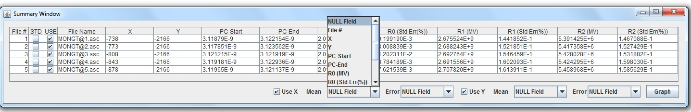
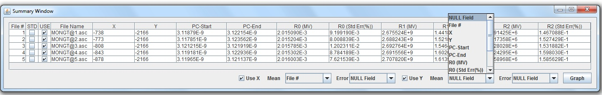

Step 1
From the "
Summary Window", select the appropriate X field from the
drop-down box.

Step 2
Select the appropriate Y field from the drop-down box, then hit the "Graph"
button
Tip: To plot the standard error (where applicable), select the
appropriate standard error field from the drop-down box next to the
drop-down box for both X and Y fields respectively.
Tip: You may plot more than one graph at a time.

Return to menu